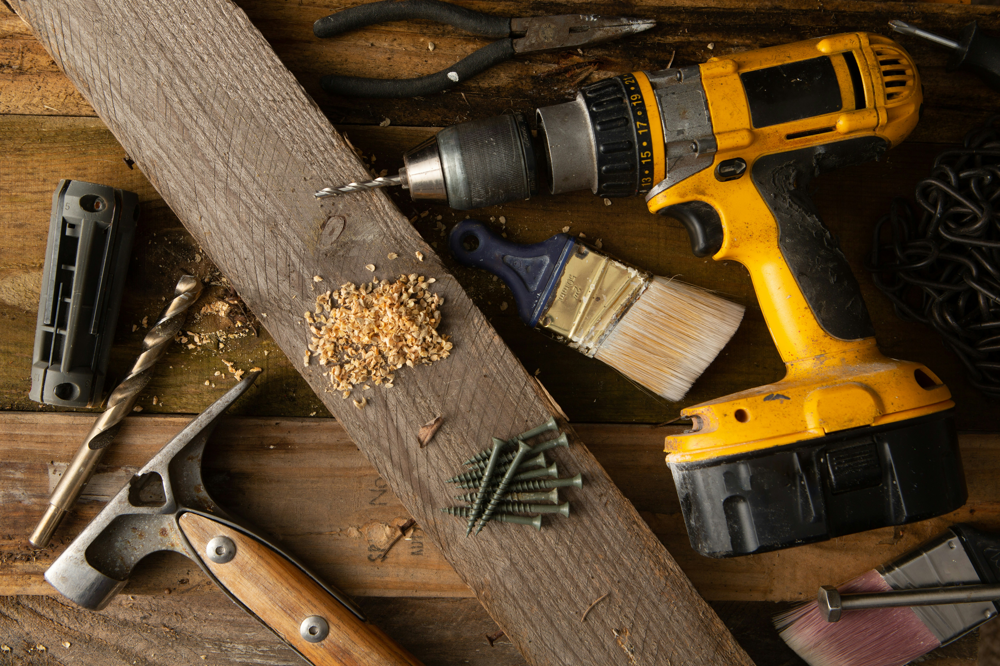

Cómo elegir el taladro correcto
Descubre las diferencias entre un taladro atornillador, un taladro percutor y un rotomartillo para escoger la herramienta adecuada para tu próxima obra.

Elegir el taladro adecuado depende principalmente del material que deseas perforar y del tipo de trabajo que necesitas realizar. Aunque estas herramientas pueden parecer similares, cada una está diseñada para cumplir funciones diferentes.
Conocer sus principales características permite trabajar de manera más cómoda y utilizar la herramienta más apropiada para cada proyecto.
¿Qué tipo de taladro necesitas?
- Taladro atornillador: Es una alternativa práctica para montar muebles, colocar y retirar tornillos y realizar perforaciones sencillas en materiales como madera, plástico y algunos metales.
- Taladro percutor: Combina el movimiento de giro con pequeños impactos. Esto facilita la perforación de materiales de construcción como ladrillos y mampostería, además de permitir trabajos convencionales cuando se desactiva la percusión.
- Rotomartillo: Está pensado para trabajos de mayor exigencia y entrega impactos más fuertes. Resulta más apropiado cuando se necesita perforar materiales duros como hormigón o piedra.
- ¿Con cable o batería? Los modelos inalámbricos ofrecen mayor movilidad y comodidad. Los modelos con cable pueden ser convenientes para trabajos prolongados donde se dispone constantemente de una conexión eléctrica.
Antes de elegir, considera
- El material: madera, metal, ladrillo u hormigón requieren herramientas y brocas diferentes.
- La frecuencia de uso: para trabajos ocasionales puede bastar una herramienta más sencilla, mientras que un uso frecuente puede requerir un equipo más robusto.
- Las brocas y accesorios: utiliza siempre accesorios compatibles con la herramienta y adecuados para el material que vas a trabajar.
Importante
Antes de perforar, comprueba qué material vas a trabajar y selecciona una broca apropiada. Evita forzar la herramienta y utiliza los elementos de protección necesarios para el trabajo que estés realizando.